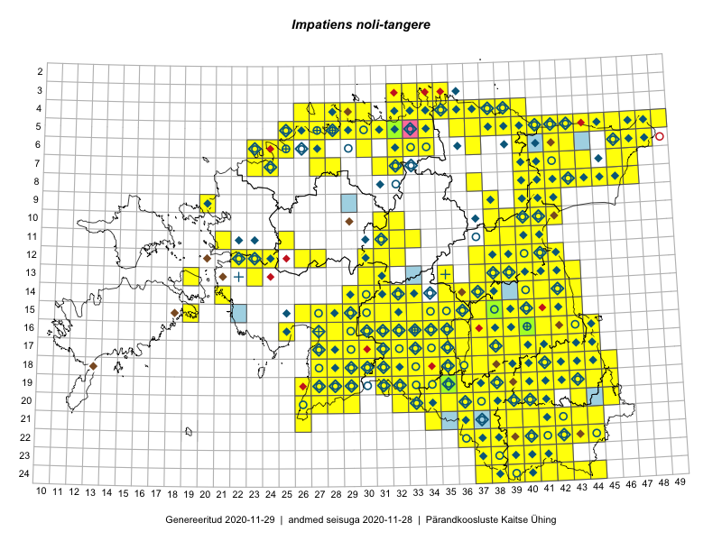

Impatiens noli-tangere
Uuendatud: 2016-12-01
Kaardile koondatud taksonid: Impatiens noli-tangere L.

Kaart põhineb 385 kirjel.
Kuvatud viited 20 esimesele andmebaasikirjele, ülejäänud PlutoFis
- Malle Leht: 2015-05-22: : ala
- Malle Leht: 2015-05-16: : ala
- Thea Kull: 2015-07-07: 16-40: ala
- Rein Kalamees: 2015-06-08: 05-32: ala
- Peedu Saar, Liina Oja: 2015-05-20: 18-27: ala
- Malle Leht: 2015-08-02: : ala
- Toomas Kukk, Peedu Saar: 2014-09-23: 06-42: ala
- Rein Kalamees, Kersti Püssa: 2015-08-31: 04-32: ala
- Tiit Hallikma, Toomas Kukk: 2015-07-21: 05-44: ala
- Rein Kalamees, Kersti Püssa: 2015-08-04: 03-33: ala
- Tiit Hallikma, Toomas Kukk: 2015-07-21: 05-45: ala
- Peedu Saar, Ott Luuk: 2015-06-21: 14-41: ala
- Peedu Saar, Ott Luuk: 2015-06-21: 14-42: ala
- Peedu Saar: 2015-07-04: 18-45: ala
- Peedu Saar: 2015-07-04: 18-44: ala
- Peedu Saar: 2015-07-14: 15-38: ala
- Peedu Saar: 2015-07-15: 15-39: ala
- Ott Luuk, Peedu Saar: 2015-08-13: 24-44: ala
- Eerik Leibak, Toomas Kukk: 2015-05-03: 18-45: ala
- Tiit Hallikma, Toomas Kukk: 2015-07-22: 05-49: ala